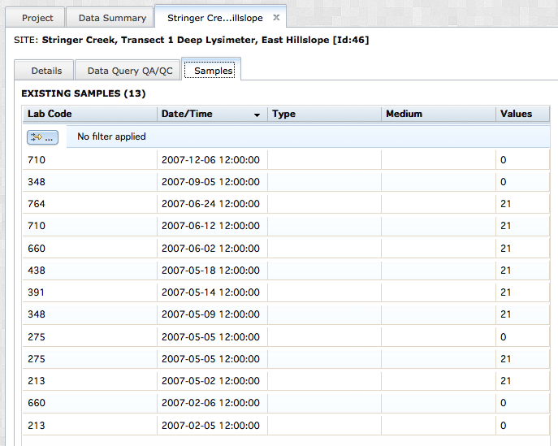
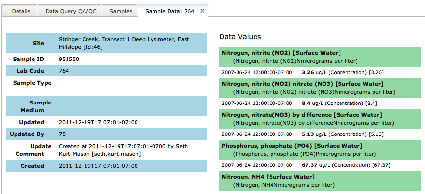

VOEIS provides users with a set of views for exploring the data values associated with individual laboratory samples. This can be useful if a PI or lab manager is interested in knowing whether or not a particular analysis has been performed on a sample.
To begin qeurying data, navigate to the (Project_Show) page of the project you are interested. Remember, you will only be able to query data from projects where you have the appropriate access permissions. Open the (Project_Show) page by selecting the project name from the Projects dropdown menu.

In the (Project_Show) page with the 'Data Summary' tab open, select the site you are interested in. The (Site_Name) tab will open. Select the "Samples" tab from the top of the page.

To review summary information about individual samples, click the row(s) of interest in the sample grid. A new tab will open containing the sample metadata and a list of the data values associated with that sample.

Created with the Personal Edition of HelpNDoc: Easily create PDF Help documents